K562 Activating DNase matched - State 4:PromP (n=67)
K562 Activating DNase matched - State 4:PromP (n=67)
[See group descriptions]
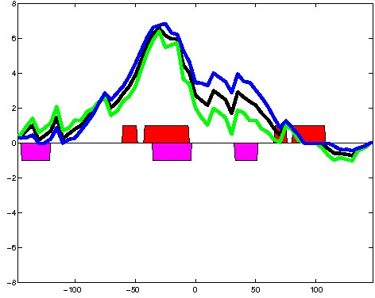
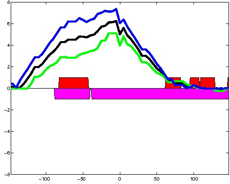
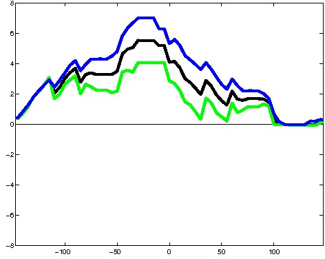
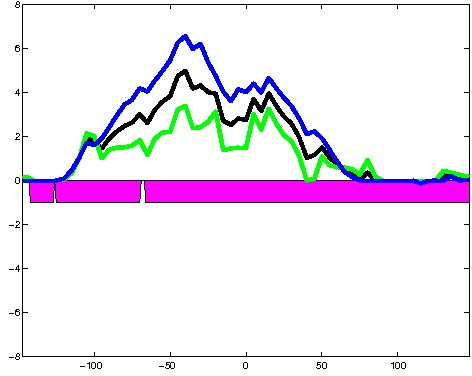
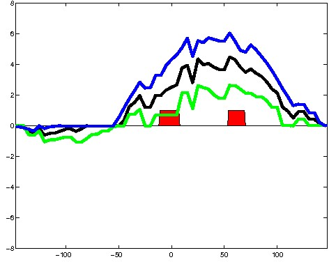
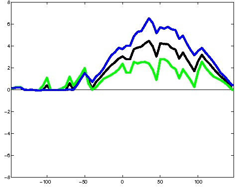
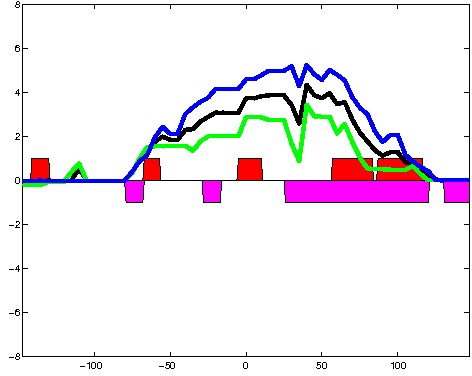
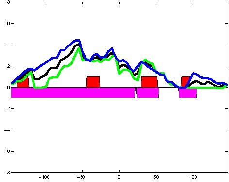
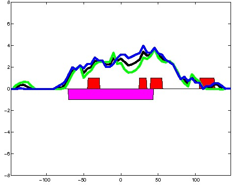
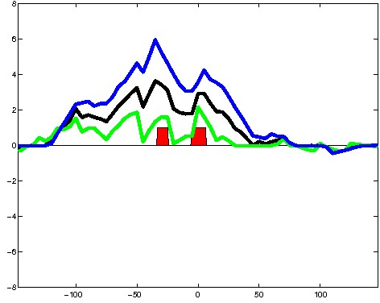
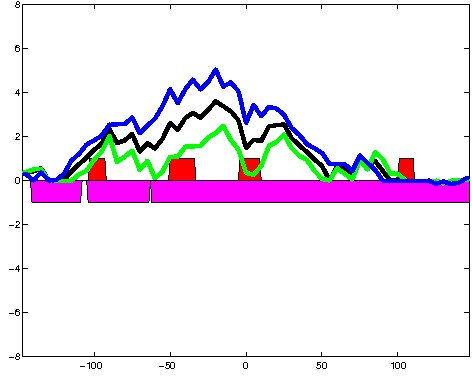
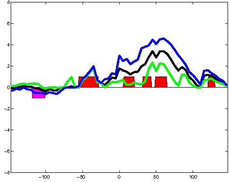
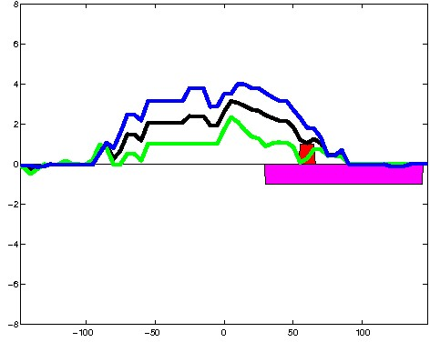
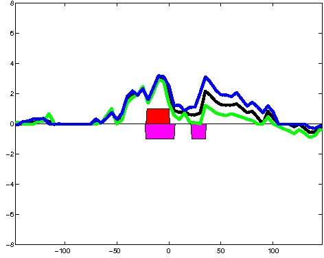
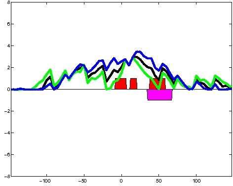
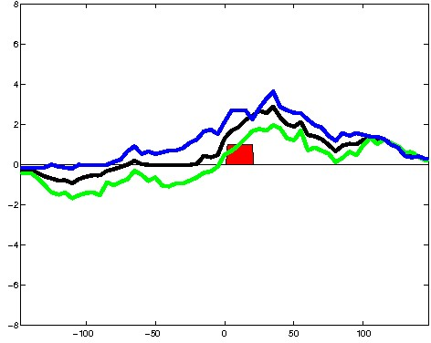
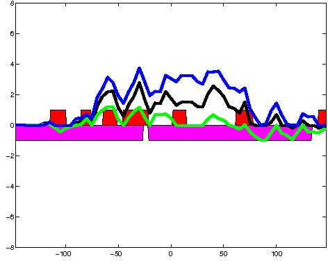
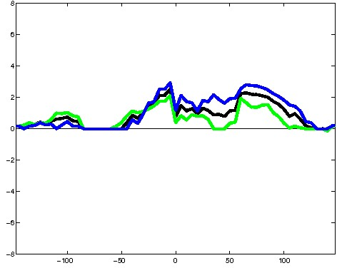
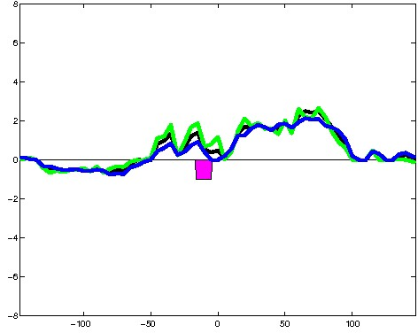
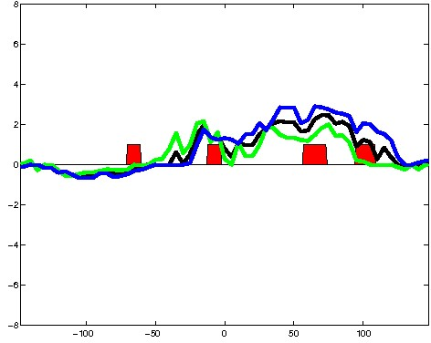
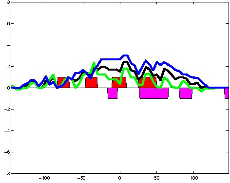
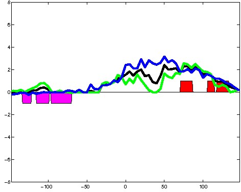
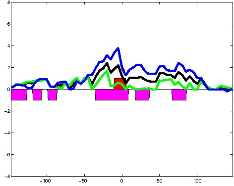
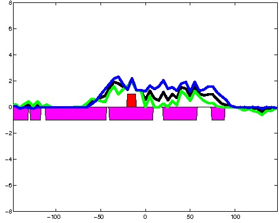
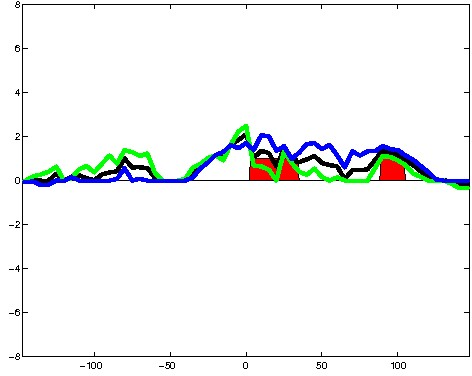
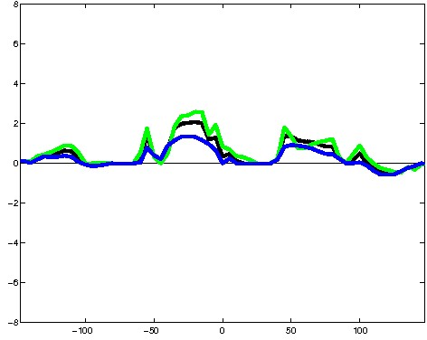
; picked in K562 (state 4:PromP, DNase); matched; chr19:42,538,949-42,539,243 (295bp)")
; picked in K562 (state 4:PromP, DNase); matched; chr2:45,878,089-45,878,383 (295bp)") 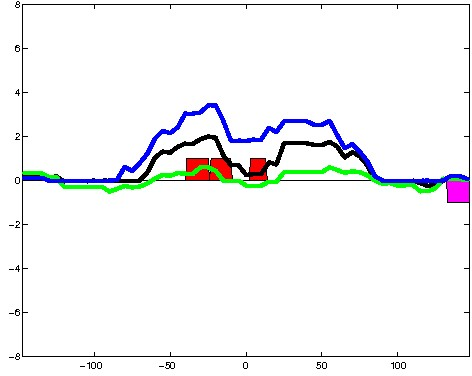
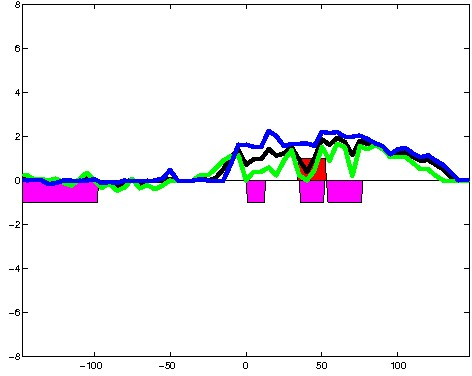
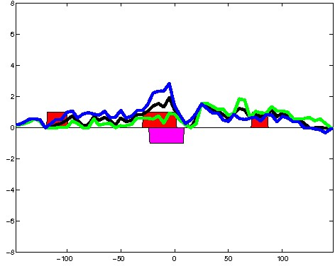
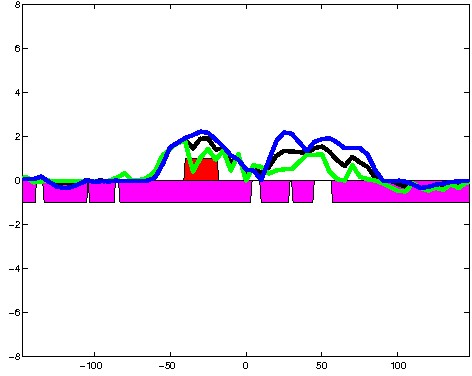
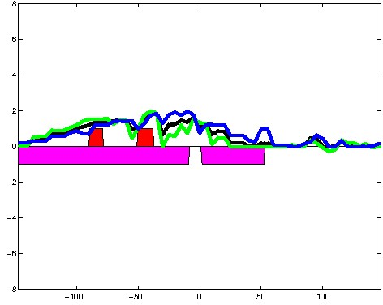
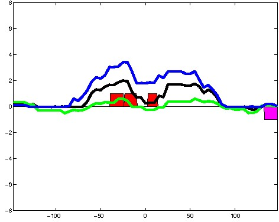
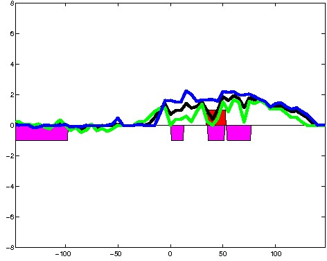
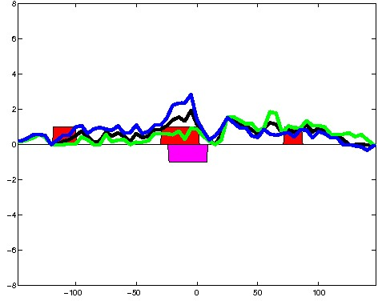
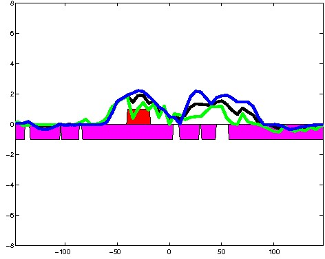
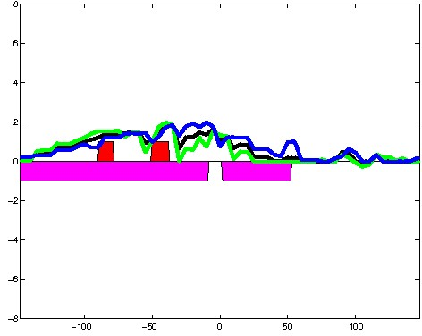
; picked in K562 (state 4:PromP, DNase); matched; chr11:64,879,149-64,879,443 (295bp)") 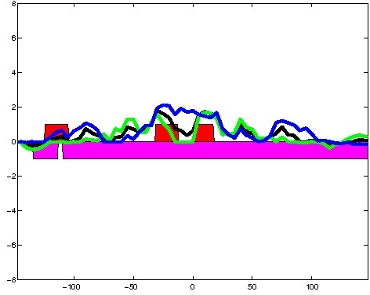
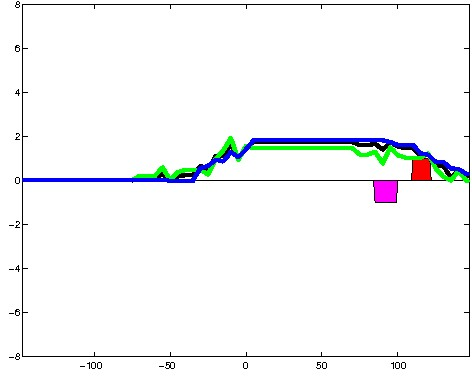
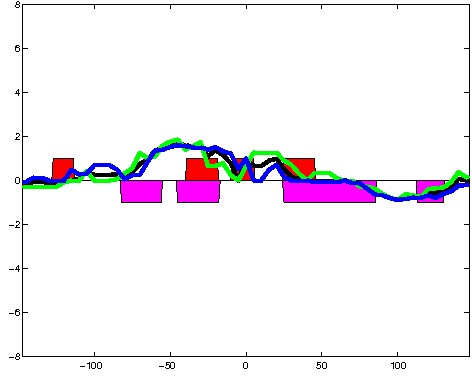
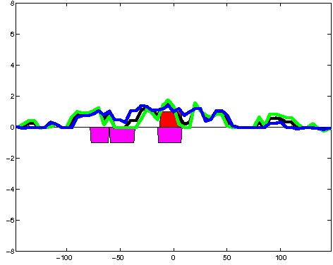
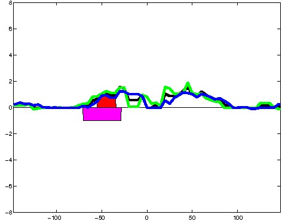
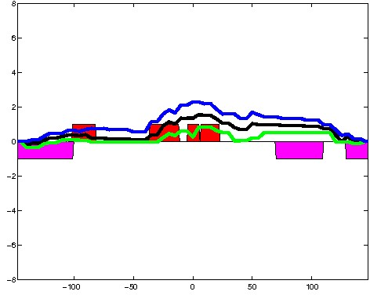
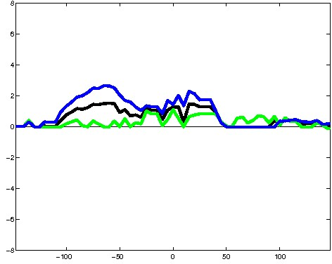
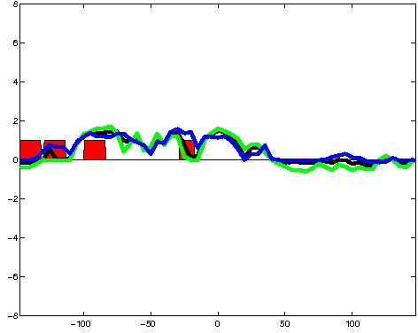
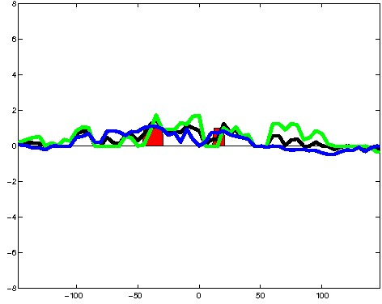
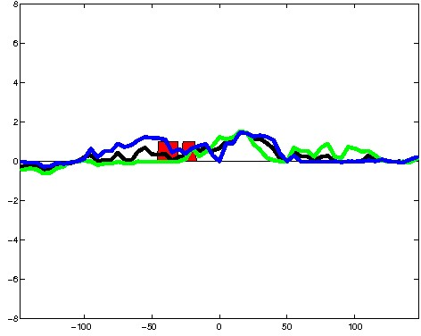
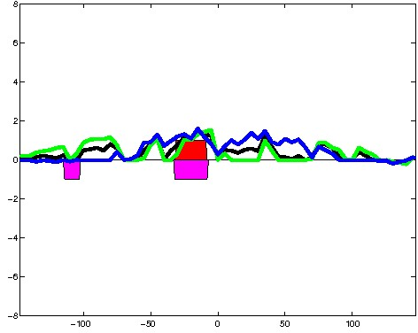
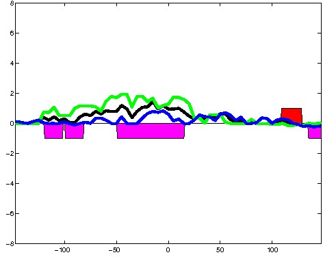
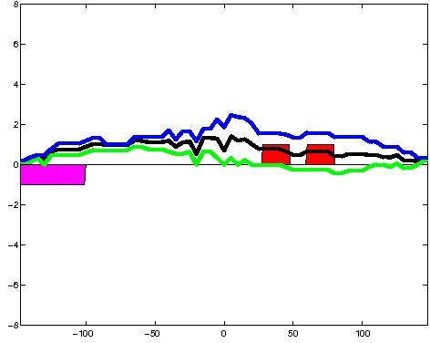
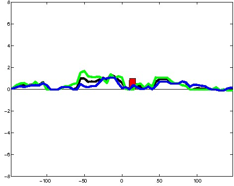


; picked in K562 (state 4:PromP, DNase); matched; chr5:157,375,809-157,376,103 (295bp)")